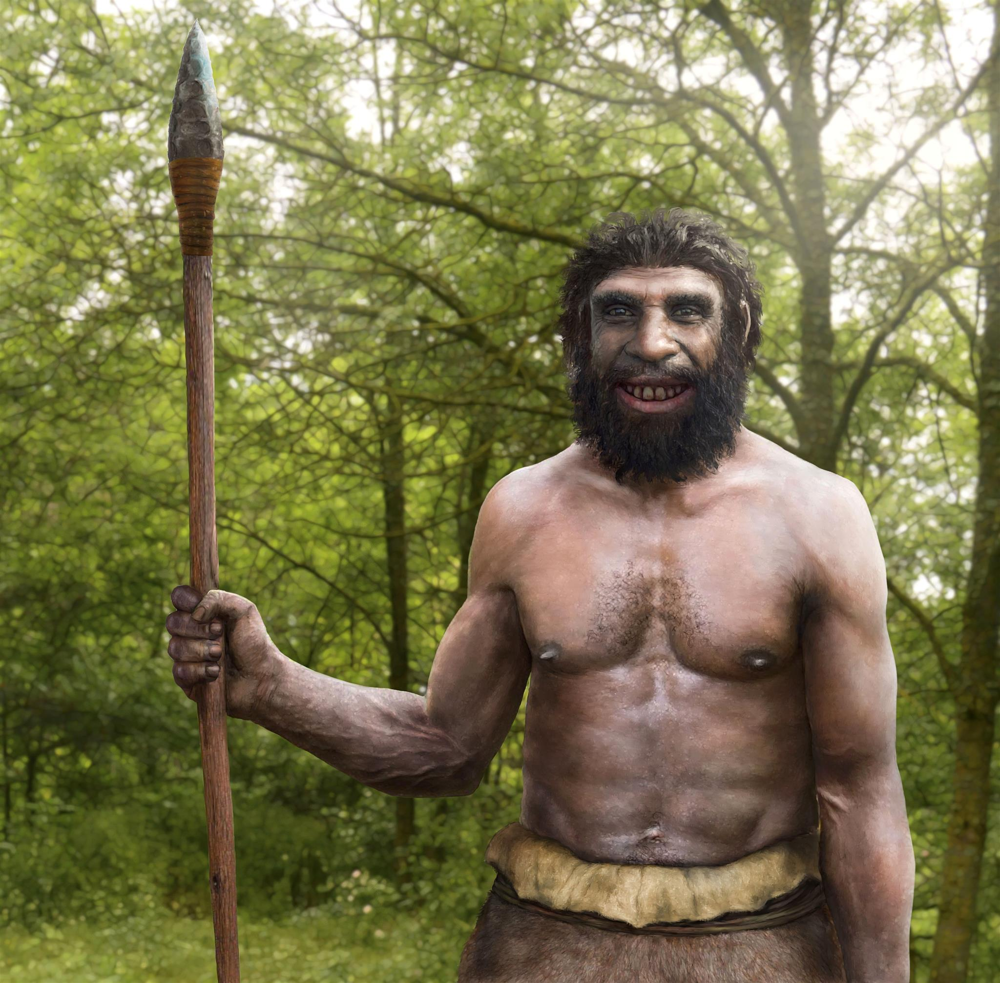
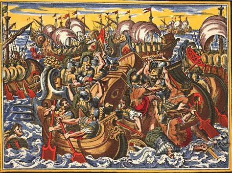
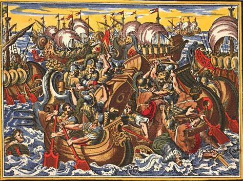
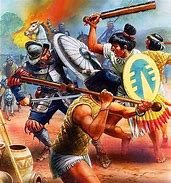
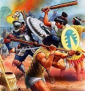
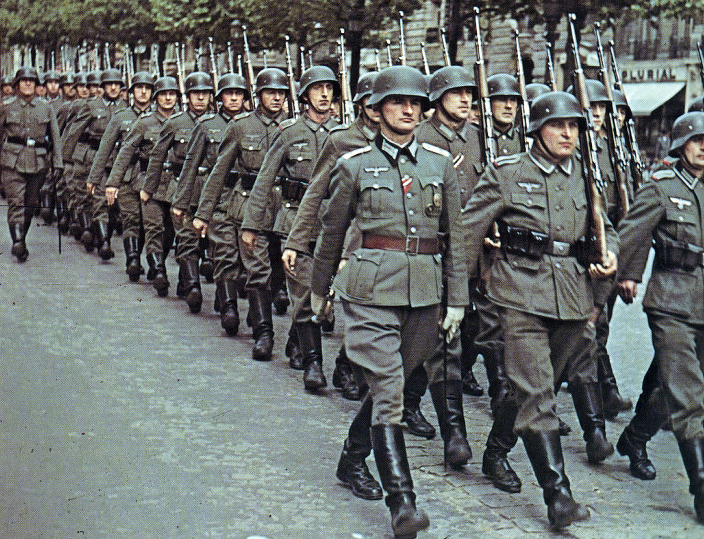
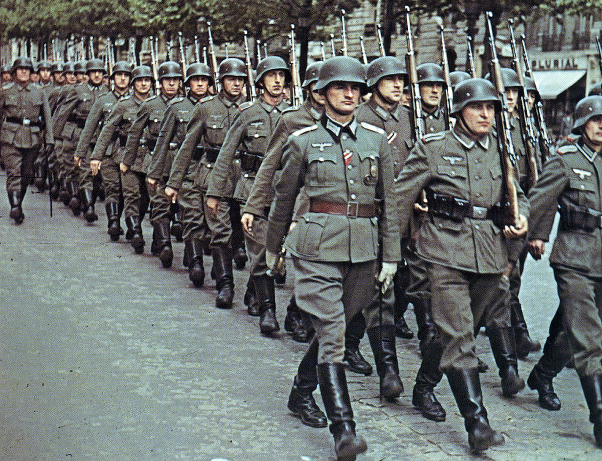

Famous Wars in History
One of the most notable wars fought in Pre-Historic Times is the war for the Survival of Homo Sapiens, Modern Humans, us. This war was most notably fought with a species of humans called Neanderthals.
Then after, civilisations, kingdoms and empires began to form. One of the first empires/kingdoms to ever form was the Sumer Empire, in modern day Iran and Iraq. The first ever recorded war in history was between the forces of Sumer and the Elam Empire in 2700 BCE, where the Sumerians, under Enembaragesi, defeated the Elamites.
A famous war fought between early civilisations in the Classical Era was the Peloponnesian War, fought between the infamous cities of Athens and Sparta, and their respective allies. The Peloponnesian War was started as a result of an assault launched by the Athenians at Sicily, causing Sparta to retaliate. At the end, after long hard-fought battles, Sparta emerged victorious after defeating the Athenian fleet at Aegospotami, also with the financial help from the Persian Empire.
Another iconic series of early wars during the Classical Era was the Conquest of Alexander The Great. Alexander, born on the 20/21 of July, 356BC in Pella, Macedonia. He was born into the royal family, his father being Philip II, king of Macedon. Alexander the Great would eventually grow up to invade the entire Persian Empire, the Egyptian lands and a bit of India.
In the Medieval Era saw the rise of the largest continuous land empire in history, the Mongolian Empire, under Temujin or Gengis Khan, meaning "Universal Ruler". Their mongolian Horse Archers, cavalry based army and mastery over siege equipment allowed them to conquer much of Asia, the Middle East and Europe. His empire spanned from Eastern Europe to Korea, Southern Russia to Southern India and Arabia.
During the Renaissance and Industrial Times, many European powers estabilished colonial empires, spanning continents. Therefore, a lot of wars were fought against natives by European powers. For example, when the Spanish conquered the Aztec Empire and the Incan Empire. However, back in Europe, a tactical genius would be born, conquering almost the entirety of Europe. Napoleon Bonaparte. The young French General would go on to lead France into seven different wars against multiple European countries at once, only losing two of the wars.
Then, we have WW1 and WW2 fought in the Early Modern and Modern Era respectively. WW1 was between the Triple Entente (The Empire Of Great Britain, French Empire and the Russian Empire), America and Japan against the Triple Alliance (German Empire:Second Reich, Austria-Hungary, Italy and then later the Ottomans.) In WW2, it was fought between the Axis Powers (Germany:Third Reich, Italy, Imperial Japan) against the Allied Powers (The Empire Of Great Britain, France, USA, Poland) and USSR
This video explains how us humans were almost hunted to extinction by another human species called Neanderthals.
 

 


 
